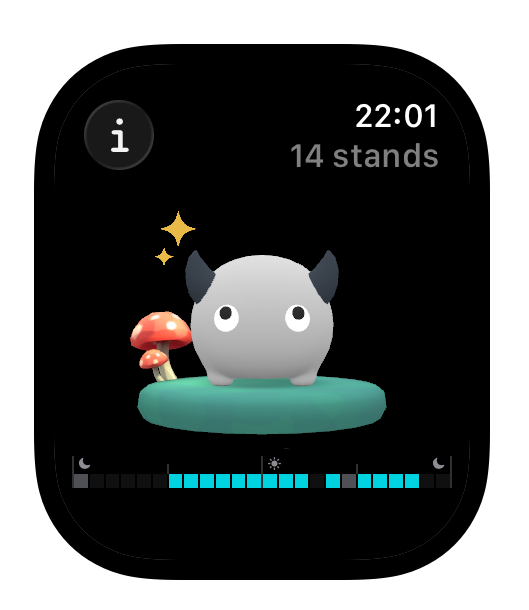
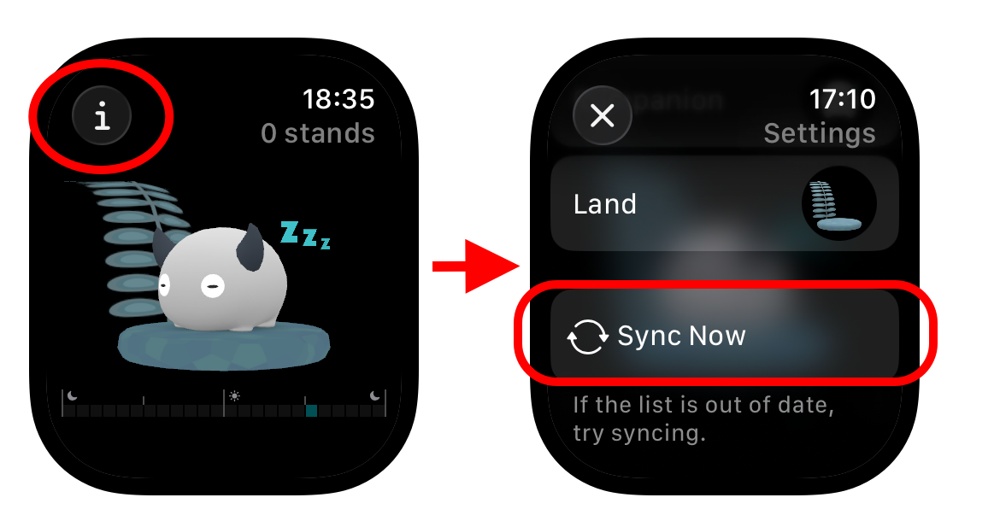

Help
How to Use the Apple Watch App
※ watchOS 10 or later is required.
Using the Standland Apple Watch app is simple.
When you launch the app, today’s stand count and current stand status are displayed right away. You can also rotate the Digital Crown to view the world from different angles.
If your companion is awake, that hour counts as one stand. Stand up and wake up your companion!

How to Change Companions and Lands
You can choose which companion and land to display from those you’ve already unlocked on your iPhone.
1. Tap the (i) icon in the top-left corner of the screen
2. Tap the item you want to change to open the selection screen

If the List Is Not Up to Date
Companions and lands unlocked on your iPhone are automatically added to the selection list.
If the list is not up to date, tap the Sync button to try syncing.
If the list still doesn’t update, please restart both your Apple Watch and iPhone, then try syncing again in a location with a stable connection.
